Method: the live site https://daggerheart-loot.pages.dev (production, wave
2b, b6f153a5), signed out, 29 states at 360x640, 390x640 and 600x640, Russian
and English (probe.cjs). Three passes: before (as shipped),
after (thumb.css injected: every boxed control 40 px, the text links
by their padded box) and fold (thumb.css plus fold.css:
the spacing folds of T3 and the header hold of T12). Readings:
measure-before-360-390-600.json (19866 controls read, 3428 readings under 40
px in 33 selector groups), measure-after-*.json,
measure-fold-*.json (78 readings under 40 px, every one the skip link, which
T7 allows). Not built code. The signed-in surfaces (the lists, the list pages,
/homebrew) are not on the live site signed out:
listcard.html draws the card from the code's CSS, and the implementer
measures their first-screen rows through the loader (plan-T.md S3).
| Row | Before | After, no fold | After, with the folds |
|---|---|---|---|
| /roll/std (exception 325) | 323.5 | 338.7 (EN 379.9) | 318.7 |
| /roll/alt, /roll/vault_of_ages, /roll/wondrous_environments | 250.7 | 265.9 (EN 307.1) | 245.9 |
| /tables/eq_weapon | 234.4 | 242.4 (EN 283.6) | 230.4 |
| /tables/eq_weapon, two filters | 252.4 | 260.4 (EN 301.6) | 248.4 |
| /i/ci1 | 137.2 | 140.4 (EN 181.6) | 136.4 |
| /search, «меч» | 230.0 | 236.4 (EN 277.6) | 232.4 |
| the header | 111.2 | 114.4 (EN 155.6: the brand row wraps) | 110.4 |
At 390 px every row reads as at 360 RU (the EN header holds at 390 without the fold). At 600x640 (logged, not asserted): /roll/std 316.2, 331.4, 311.4; the roll pages 250.2, 265.4, 245.4; the other rows as at 360.
The results line and a result's action row (a row of small buttons, the add and more row on a card):
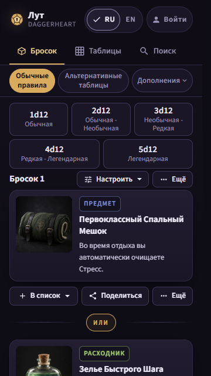
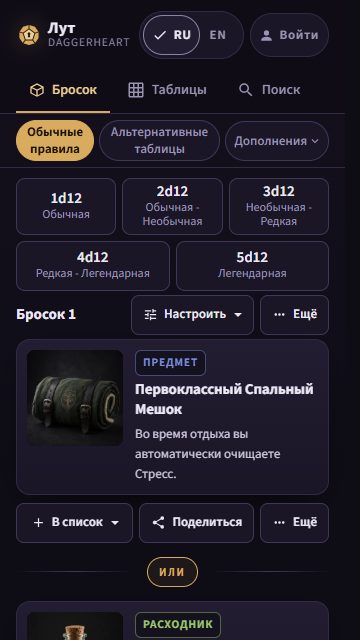
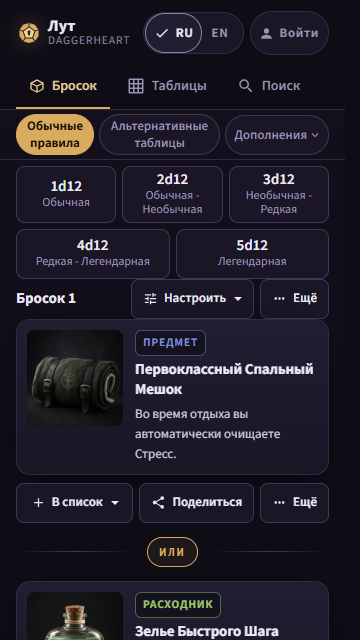
The selection bar (three rows of 40 px controls) and the filter sheet's chips:
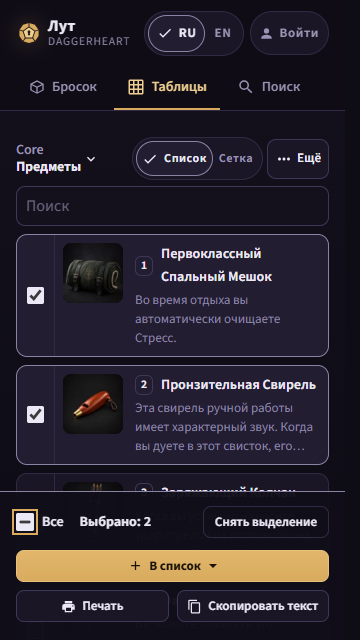
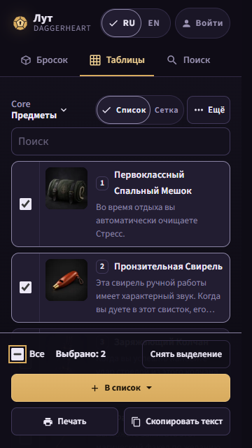
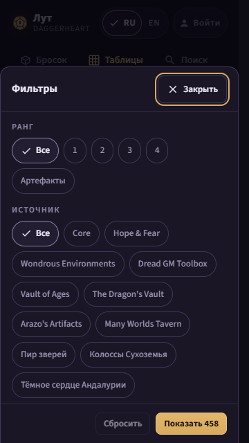
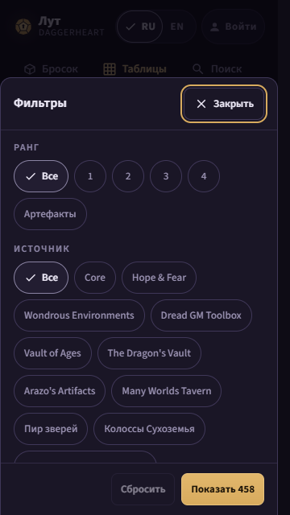
The header and the picker row in English (the tightest row), and the grid's tick:
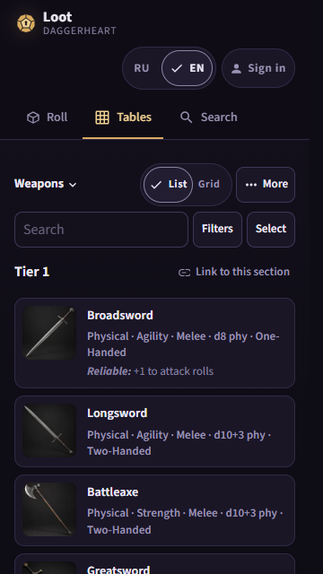
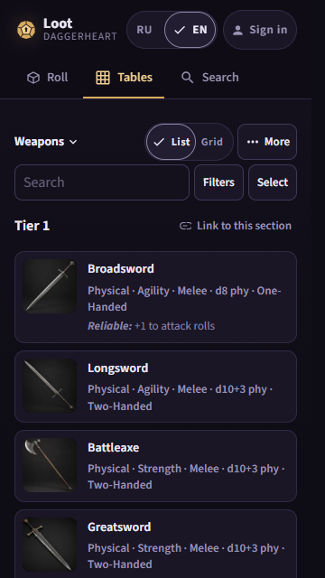
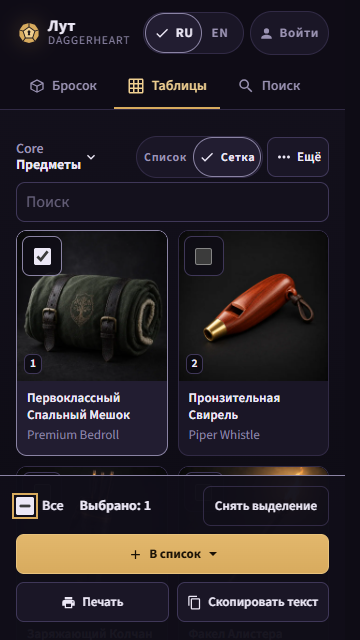
The roll setup's chips and steppers, and /search's start chips:
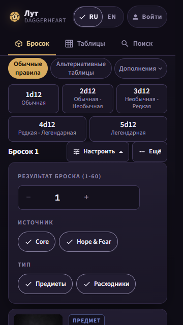
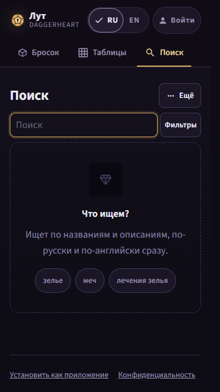
Every pass at 360 and 390 px, RU and EN, is in shots/ as
<state>__<width>__<lang>__<before|after|fold>.png.
listcard.html (the card CSS of ListCard.svelte at HEAD, the
system face as a stand-in for Source Sans 3): today the bordered 32 px «Ещё» on its own
row, 197 px a card; recommended, «Ещё» as a 40 px text button in the corner the pick box
takes in the selection mode, 155 px (a card 42 px shorter, so about 3 cards in the first
screen at 360); fallback, the row kept and the button 40 px, 171 px.
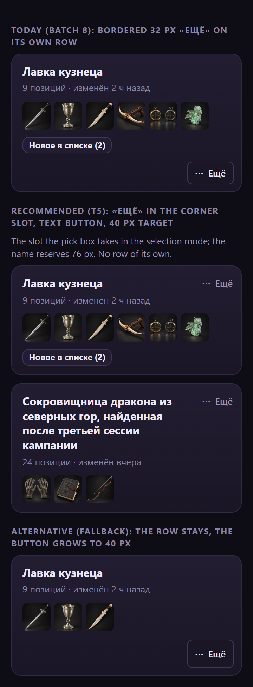
Impeccable critique is the orchestrator's (a subagent cannot run it); its
outcome is written here.